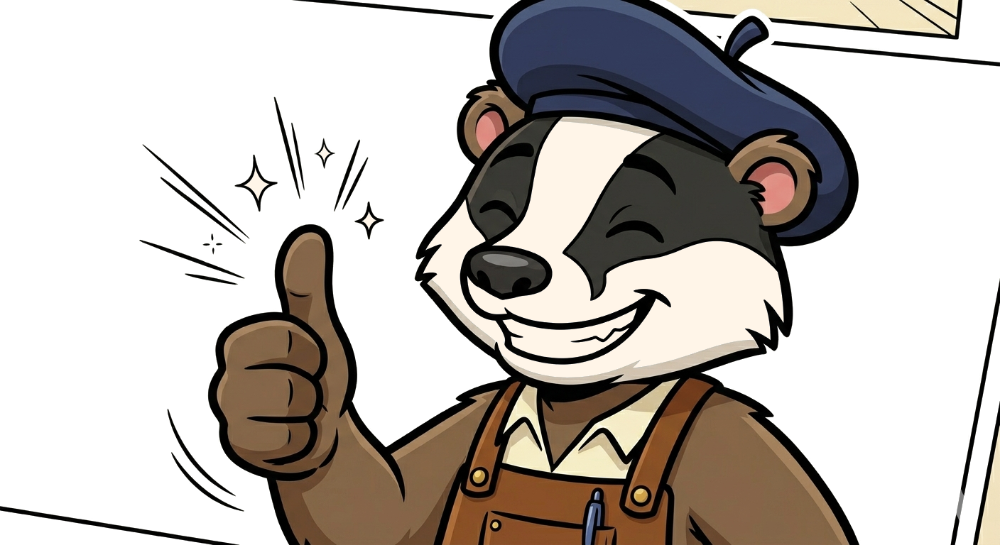

On regarde quel PDF aujourd'hui ?
8 outils, méthode artisanale, pas un octet qui sort de chez vous.
Que voulez-vous faire ?
Récents
Préférences
Réglez le studio à votre main.
Apparence
Sortie par défaut
OCR
Données locales
Mises à jour
À propos
L'atelier français qui range, taille, signe et tamponne vos PDF — sans abonnement, sans cloud, sans bavardage.
L'éditeur
Le Studio PDF est conçu et maintenu par Triskell Studio. Nous fabriquons des outils logiciels artisanaux : locaux, durables, sans abonnement.
Tamponner un PDF
Apposez un tampon "PAYÉ", "BROUILLON", "APPROUVÉ" ou personnalisé sur les pages choisies.

Tampon apposé
Convertir un PDF
Transformez votre PDF en document Word ou en images.
Conversion réussie
OCR — Rendre un scan cherchable
Reconnaître le texte d'un PDF scanné pour pouvoir le rechercher et le copier.
Cet outil utilise Tesseract (libre et gratuit) pour reconnaître les caractères. Téléchargez-le et relancez l'application.
Obtenir TesseractOCR terminé
Filigrane & numérotation
Ajoutez un filigrane texte ou numérotez les pages de votre PDF.
Opération réussie
Découper un PDF
Extrayez les pages que vous voulez, dans l'ordre que vous voulez.
1-5, 8, 10-12. L'ordre que vous tapez est l'ordre de sortie : 3, 1, 2 réorganise.
Extraction réussie
Protéger un PDF
Verrouillez votre PDF avec un mot de passe pour qu'il reste confidentiel.
Restrictions supplémentaires (optionnel)
PDF protégé
Compresser un PDF
Réduisez la taille de votre PDF pour l'envoyer plus facilement.
Compression réussie
Fusionner des PDF
Combinez plusieurs PDF en un seul fichier, dans l'ordre que vous voulez.